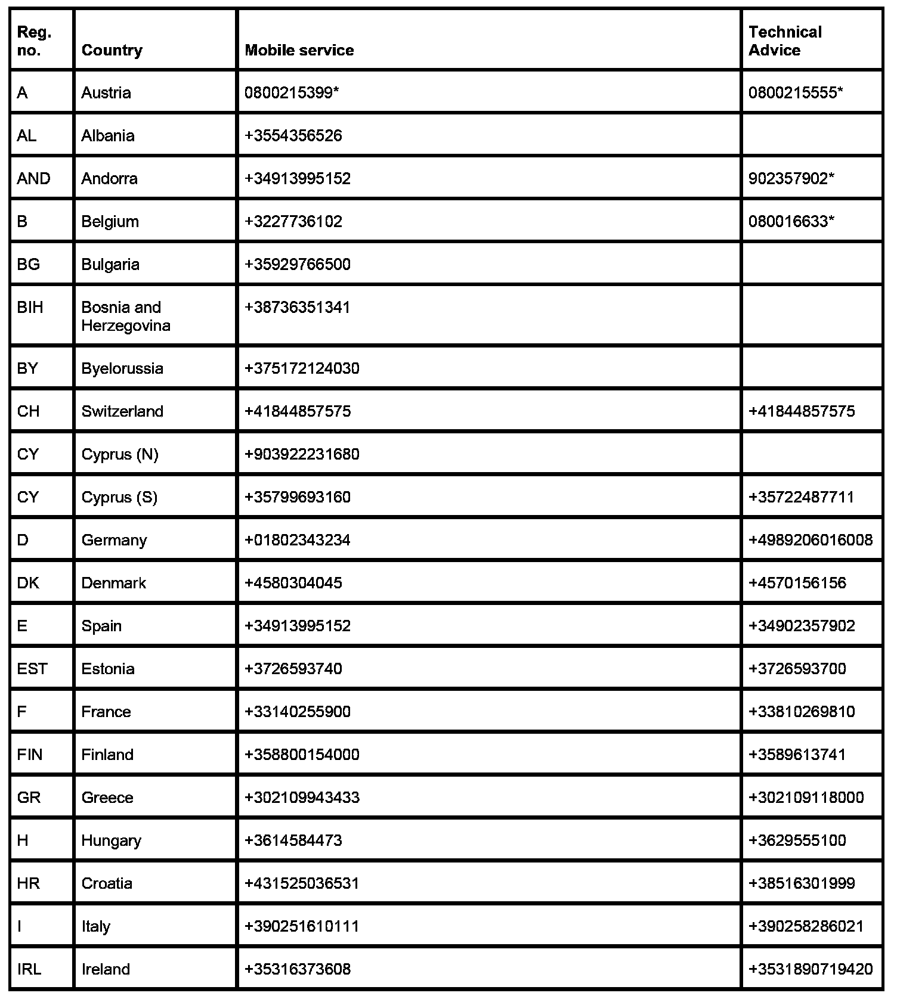
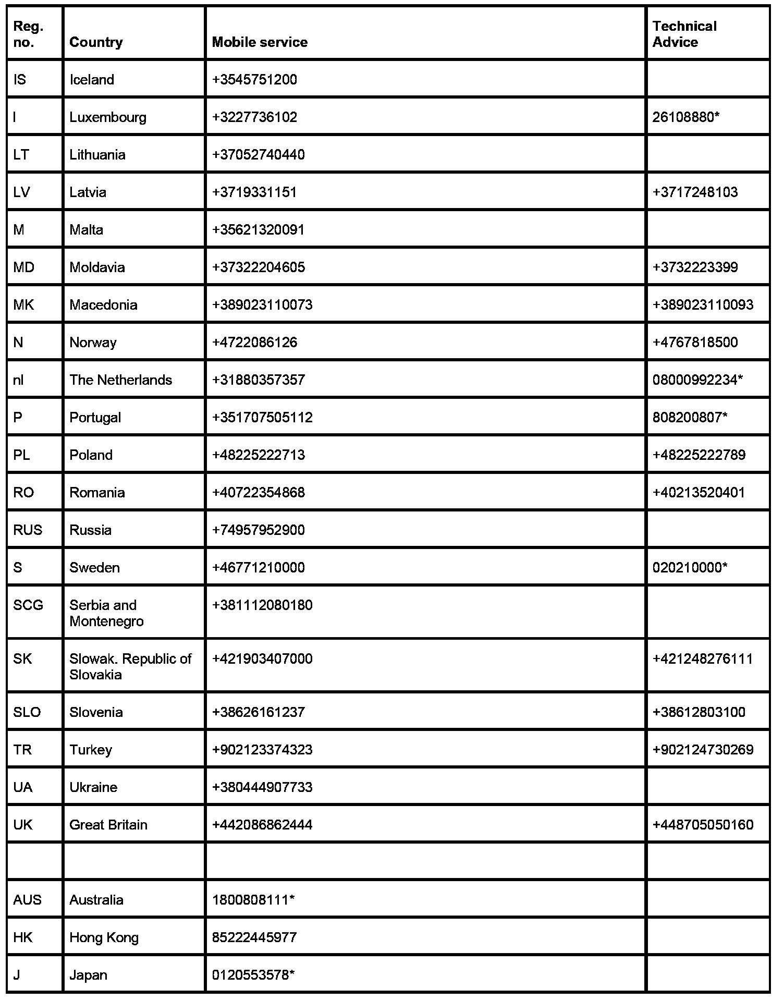
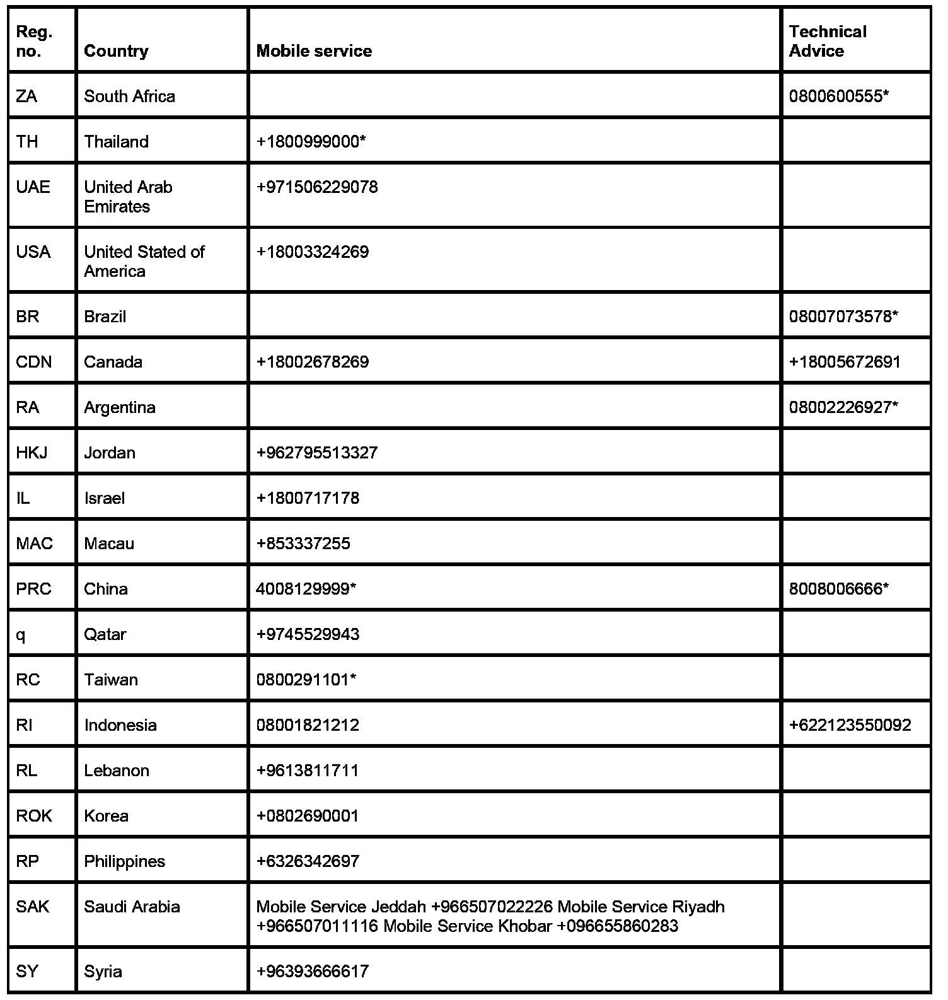

Enter Phone Numbers
Enter Phone Numbers
Internationally valid phone numbers for selected centers for Roadside Assistance and Technical Advice (as at 02/07)
Please determine the home dealer phone number prior to entering.



* can only be reached from inside this country
The phone numbers can also be found in the "Service Contact" booklet in each vehicle.
The phone numbers for
- BMW dealer (service dept. or switchboard)
- BMW Technical Advice
- BMW Roadside Assistance
ensure there is contact from the vehicle to the service centers. Entering the phone numbers with international dialing codes also ensures customer contact across national borders.
The phone numbers only need to be entered for the first time in the tester and are then available as preconfigured.
Changes to it can be entered at the menu item "CBS correction tester data" in the tester.